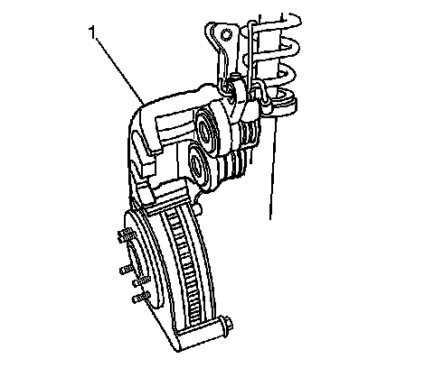
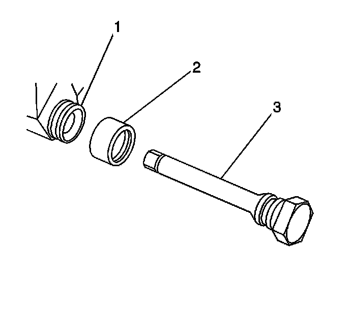
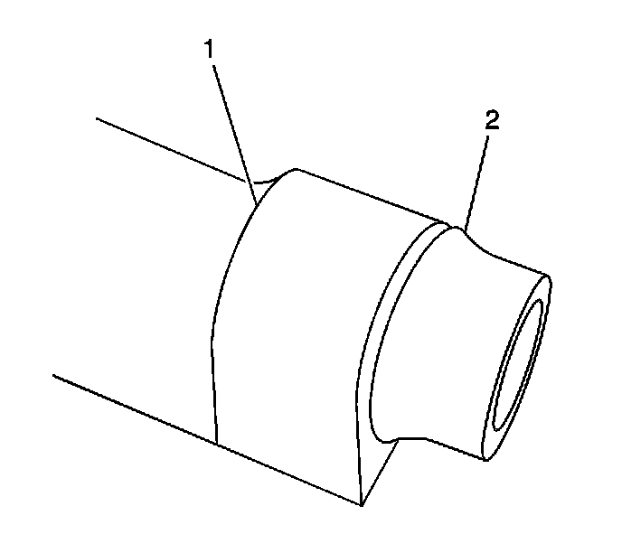

Front Disc Brake Hardware Replacement
Front Disc Brake Hardware Replacement
Caution: Refer to Brake Dust Caution (Brake Dust Caution) .
Removal Procedure
1. Inspect the fluid level in the brake master cylinder reservoir.
2. If the brake fluid level is midway between the maximum-full point and the minimum allowable level, then no brake fluid needs to be removed from the reservoir before proceeding. If the brake fluid level is higher than midway between the maximum-full point and the minimum allowable level, then remove brake fluid to the midway point before proceeding.
3. Raise and support the vehicle. Refer to Lifting and Jacking the Vehicle (Service and Repair) .
4. Remove the tire and wheel. Refer to Tire and Wheel Removal and Installation (Service and Repair) .
Important: The upper caliper guide pin has a bushing as part of the pin guide. The lower caliper guide pin is of a solid design.
5. Remove the brake caliper. Refer to Front Brake Caliper Replacement (Front Brake Caliper Replacement) .

Notice: Support the brake caliper with heavy mechanic wire, or equivalent, whenever it is separated from its mount and the hydraulic flexible brake hose is still connected. Failure to support the caliper in this manner will cause the flexible brake hose to bear the weight of the caliper, which may cause damage to the brake hose and in turn may cause a brake fluid leak.
6. To loosen the brake caliper pin bolts, hold the brake caliper guide pin with a wrench.
7. Remove the brake caliper pin bolts.
8. Remove the brake caliper (1) from the mounting bracket.
9. Remove the brake pads from the disc brake caliper bracket.
10. Remove the brake pad retainers from the disc brake caliper bracket.

11. Remove the brake caliper guide pins (3) from the brake caliper mounting bracket (1).
12. Remove the brake caliper pin boots (2) from the brake caliper mounting bracket (1).
Installation Procedure
Important:
* Ensure that the caliper guide pin boots (2) are fully seated to the caliper guide pin retaining seat (3) of the caliper pin.
* Ensure that the caliper guide pin boots (2) are fully seated to the caliper boot seal retaining seat (1) of the brake caliper mounting bracket.
1. Apply a thin coat of Niglube(R) GM P/N 18046532 grease to the brake caliper guide pin boots.

2. Install the caliper guide pin boots (2) to the brake caliper mounting bracket retaining seat (1).

3. Install the caliper guide pins (3) to the caliper mounting bracket (1).
Ensure the caliper guide pin retaining seat is fully seated to the caliper pin boot (2).
4. Carefully pull outward on the caliper guide pin (3) to ensure that the caliper guide pin retaining seat is fully seated to the caliper guide pin boot (2).
5. Install the brake pad retainers to the brake caliper bracket.
6. Install the brake pads to the brake caliper bracket.
7. Install the brake caliper to the mounting bracket. Refer to Front Brake Caliper Replacement (Front Brake Caliper Replacement) .
Important: If reusing the caliper pin bolts, the threads of the caliper pin bolts and the threads for the caliper bracket mounting holes must be free of residue and debris prior to application of threadlocker in order to ensure proper adhesion and fastener retention.
8. Prepare the bolts and the threaded holes for assembly:
1. Thoroughly clean the residue from the bolt threads by using denatured alcohol or equivalent and allow to dry.
2. Thoroughly clean the residue from the threaded holes by using denatured alcohol or equivalent and allow to dry.
3. Apply threadlocker GM P/N 12345493 (Canadian P/N 10953488), or equivalent to 2/3 of the threaded length of the lower caliper bracket bolts. Ensure that there are no gaps in the threadlocker along the length of the filled area of the bolts.
4. Allow the threadlocker to cure approximately 10 minutes before installation.
5. Apply a thin coat of high temperature silicone lube to the brake caliper guide pins.
Notice: Refer to Fastener Notice (Fastener Notice) .
9. Install the brake caliper bolts (1).
Tighten the brake caliper bolts to 34 N.m (25 lb ft).
10. Install the tire and wheel. Refer to Tire and Wheel Removal and Installation (Service and Repair) .
11. Lower the vehicle.
12. Fill the master cylinder to the proper level . Refer to Master Cylinder Reservoir Filling (Master Cylinder Reservoir Filling) .